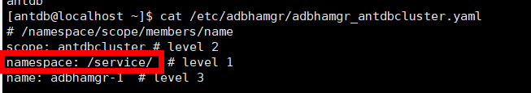

当需要对已备份的AntDB实例进行恢复时，可以参考本节恢复AntDB实例至原位置或新位置。
背景信息
支持使用备份副本、复制副本、归档副本进行恢复。支持恢复至原位置（复制副本不支持恢复至原位置，复制副本的归档副本不支持恢复至原位置）或新位置。
前提条件
- 恢复前请确保恢复目标位置的数据目录剩余空间大于恢复副本缩减前大小，否则恢复将失败。
- 执行新位置恢复前，请确保数据库安装用户具有恢复目标路径的读写权限。
- 恢复时如果目标实例的端口被占用，请先解除目标实例占用的端口再执行恢复操作。确认所需端口，请参考备份前准备查询。
- 恢复的目标实例为集群实例时，请确保各节点上AntDB服务已停止，且AntDB端口未被占用，否则会导致恢复失败。
- 集中式集群需要配置数据库配置文件（需要在停止数据库之前操作），具体方法如下。
- 使用PuTTY登录集群任一节点，然后输入su - antdb命令切换至运行数据库的操作系统用户。
- 执行adbhamgrctl -c /etc/adbhamgr/adbhamgr_antdbcluster.yaml list（/etc/adbhamgr/adbhamgr_antdbcluster.yaml请根据实际路径替换）命令，查询集群的主节点，即“Role”为“Leader”的节点。如下图所示：

- 登录2中查询到的集群的主节点，在数据库配置文件（如adbhamgr_antdbcluster.yaml）中，bootstrap项下，添加如下配置并保存。
method: OceanProtectPITR OceanProtectPITR: command: "mv $ANTDBDATA/../OceanProtectData/DATADIR $ANTDBDATA/../" no_params: True keep_existing_recovery_conf: True
- $ANTDBDATA/../为数据目录的上层目录，例如/home/antdb/app。
- $ANTDBDATA/../OceanProtectData/DATADIR中DATADIR为数据目录名称，例如/home/antdb/app/OceanProtectData/data。
- 在DATADIR目录为空并且启动集群时触发bootstrap的操作。若启动新的空集群，请删除该配置，否则集群将启动失败，空DATADIR目录将被添加.failed后缀。如不再使用本产品，请在卸载前删除该配置，以免产生上述影响。
- 执行恢复操作前请先停止AntDB数据库，具体方法如下：
- 集中式单机
- 使用PuTTY登录AntDB数据库所在主机，然后输入su - antdb命令切换至运行数据库的操作系统用户。
- 执行adb_ctl stop -D /home/antdb/app/data(/home/antdb/app/data为数据库的数据目录)命令停止数据库。
- 集中式集群
- 集中式单机
- 集中式集群需要先删除etcd数据（需要在停止数据库之后操作），具体方法如下：
- 在集群任一节点执行cat /etc/adbhamgr/adbhamgr_antdbcluster.yaml（/etc/adbhamgr/adbhamgr_antdbcluster.yaml请根据实际路径和实际文件名称替换）命令，查看配置文件。
- 找到并记录namespace参数项取值。如下图所示：

- 找到并任意记录一组客户端IP地址和客户端访问adbdcs组件使用的端口号。如下图所示：

- 执行adbdcsctl --endpoint=http://客户端IP地址:客户端访问adbdcs组件使用的端口号 rm -r namespace命令，删除etcd数据。例如：adbdcsctl --endpoint=http://8.40.160.159:12379 rm -r /service/。

操作步骤
- 选择。
- 您可以以AntDB实例资源维度或以副本维度查找副本，本节以资源维度为例进行说明。
在“资源”页签，根据资源名称查找到需要恢复的资源，并单击资源名称。
- 依次选择年、月、天找到副本。
当时间上显示
 ，即表示该月、该天存在副本。
，即表示该月、该天存在副本。 - 指定副本或时间点进行恢复。
- 指定副本恢复
在副本数据页面单击
 ，在需要恢复的副本所在行单击。
，在需要恢复的副本所在行单击。 - 指定时间点恢复
在副本数据页面单击
 ，在时间轴上选择蓝色覆盖区域的副本，单击。
，在时间轴上选择蓝色覆盖区域的副本，单击。
相关参数说明如表1。表1 恢复AntDB实例参数说明 参数
说明
恢复至
选择恢复至“原位置”或“新位置”。
说明：执行新位置恢复时，如果副本中存在数据目录外的表空间目录，需要保证新位置安装数据库的操作系统用户可以访问新位置主机的同名表空间目录。
标签
当选择恢复至“新位置”时，通过“标签”可以实现快速筛选和管理资源。
位置
当选择恢复至“原位置”时，默认显示当前实例所在位置。
目标实例
当选择恢复至“新位置”时，请选择恢复到的目标实例。
恢复前执行脚本
您可以根据实际需求，在恢复任务执行前、执行成功后、执行失败后，执行自定义脚本。此处请输入脚本的绝对路径。
- Windows OS支持的脚本类型为“.bat”。
- 非Windows OS支持的脚本类型为“.sh”。
说明：
当配置了“恢复成功执行脚本”时，即使该脚本执行失败，本产品上也会显示恢复任务的状态为“成功”。请您留意任务详情中是否有后置脚本执行失败的相关提示，如有请及时修正脚本。
恢复成功执行脚本
恢复失败执行脚本
- 指定副本恢复
- 单击“确定”。